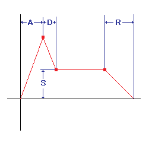

WebMoog - HTML5 Synthesizer
The WebMoog is a Web Audio API based synthesizer created to emulate the Moog Modular system.
The WebMoog allows you to create an almost infinite number of sounds using the supplied modules. Many effects and sounds can be generated using these modules.
The WebMoog also supports the Music Macro Language for creating powerful presentations using simple textual representations.
Patch
Current Patch
Default Samples
Controls
Usage @* Usage*@
The HtmlSynth consists of several modules including 2VCOs, 2VCFs, 2VCAs, 2ENVs and 2LFOs.
Click on a jack and drag your mouse to connect to another jack.
The triangle on the jack indicates the direction of the jack. If the triangle points away from the jack that means it's an output jack and if the triangle points toward the jack that means it's an input jack.
Only input jacks can be connected to output jacks and vice versa. There is only one input per jack, but an output jack can have many outputs - called a fan out.
To remove a connection click on the input jack and drag anywhere but another jack and release your mouse button.
Key Mapping
| 1 | 2 C#3 |
3 D#3 |
4 | 5 F#3 |
6 G#3 |
7 A#3 |
8 | 9 C#4 |
0 D#4 |
||||||||||||
| Q C3 |
W D3 |
E E3 |
R F3 |
T G3 |
Y A3 |
U B3 |
I C4 |
O D4 |
P E4 |
||||||||||||
| A | S C#2 |
D D#2 |
F | G F#2 |
H G#2 |
J A#2 |
K | L C#3 |
; D#3 |
||||||||||||
| Z C2 |
X D2 |
C E2 |
V F2 |
B G2 |
N A2 |
M B2 |
, C3 |
. D3 |
/ | ||||||||||||
Moog Modular System
The Moog modular system consists of a number of various modules mounted in a cabinet. Each module performs a specific signal-generating or -modifying function. These modules offered unprecedented control over creating sounds by allowing a user to modify primary sound waveforms (sine waves, square waves and other waveforms provided by voltage controlled oscillators or VCO) with amplitude modulators (voltage controlled amplifiers or VCA) and spectral modulators (voltage controlled filters (VCF) or fixed filter banks) and other modifiers. Envelope generators provided further control by modulating the attack, decay, sustain and release (ADSR) parameters of the VCAs, VCFs and other modules. The modules are patched together with patch cords with ¼i-inch mono plugs. The patch cords and module parameter knobs could be adjusted in countless ways to create a nearly infinite number of sounds. The final sound was heard ('triggered') from the system by pressing a key on an attached keyboard or pressing on the ribbon controller.
The VCO is a voltage control oscillator for sound generation. This is your primary sound generation source. The 'Out' jack continuously outputs the wave signal specified with the waveform and pitch controls.
Three 'Mod' jacks and sliders are used to modulate the oscillator pitch. Usually, one 'Mod' jack is connected to the keyboard 'CV' and the slider is set to max for setting the center frequency to the corresponding note.
The switch labeled Oct controls the octave of the relative pitch cooresponding to each key on the keyboard. The switch labled Form allows you to choose from either a sin, triangle or square wave. The pitch knob allows you to adjust the octave pitch. The outermost knob moves in semi-tone increments and the innermost knob controls up to a semi-tone
The PWM jack and the cooresponding sliders allow you to control the duty cycle of the generated waveform. The Man slider allows you to manually control the duty cycle and the jack labeled PWM and cooresponding slider allow you to use an external signal, e.g. the LFO. The duty cycle can be set for any waveform.
The VCF is a low pass voltage controlled filter module used to filter and contour your signal. It is typically cascaded from the VCO for making a desired sound color.
This module has three input jacks with cooresponding mix sliders labeled Sig 1-3. The two knobs labeled Freq and Reso control the cutoff frequency and resonance parameter for the filter respectively.
This module has three modulation input jacks with corresponding mix xliders labeled Mod 1-3. These are used to control the cutoff frequency of the filter. These jacks are typically connected to the CV jack on the keyboard in order to match the tone frquency of the pressed key which will introduce harmonics resonant with the pitch of the key being pressed.

The VCA is a voltage controlled amplifier with the gain being controlled by the Mod inputs. The three inputs labled Sig 1-3 and cooresponding sliders are the sound source inputs and the jacks labeled Mod 1-3 are the gain controls. Note that the Mod inputs are additive This could cause problems with sound leakage if using the LFO and ENV together on the same VCA. In order to achieve the desired tremlo effect with the LFO it's necessary to cascade the VCAs.
The LFO is a low frequency osscillator that can be used for a variety of modulation purposes with the most typical being vibrato and tremolo.
The waveform selection switch allows three waveforms to be selected, sin, triangle, and square. The Freq knob allows you to adjust the frequency anywhere between 0.1Hz to 100Hz.
The typical usages include modulating a VCO to create a vibrato effect. To create at tremolo effect you will modulate a VCA, but take care to cascade if you need a VCA for other reasons. See the description of VCA for more information.
The two output jacks include a 1/1 and a 1/10 signal. These values represent the amplitude of the signal since some modules are more senstive to modulation than others, for example the VCO module. In order to get an effective vibrato you should use the 1/10 ouput jack for modulating VCOs since they are very senstive to modulation variancy.
The keyboard models a simple piano keyboard and has two outputs. The 'CV', or Control Voltage, jack represents the relative pitch of the currently pressed key. This output is typically used to modulate the resonant frequency of the VCO 'MOD' jack so the VCO follows the pitch of the selected key. The other jack labeled 'Gate' is a trigger signal representing the current status of any keypresses on the keyboard. It is typically used to trigger the 'ENV' module to generate a ADSR envelope.
The glide control knob controls the rate of change between pitch changes on the keyboard.
There are several special functions available for contouring your signal.
RING
The Ring Modulator is a module that will multiply the two input signals together and present the product at the output jack. A typical use of the ring modulator is to muliply two detuned VCO signals. This will generate complex harmonics and metallic bell-like sounds.
NOISE
The ouput jack of the noise generator continously outputs the selected noise type. The slider switch allows a choice of either pink, brown, or white noise.
S&H
The sample and hold moudle will sample the value of the 'In' signal when triggered and hold that signal until the next trigger. A typical use the NOISE generator will be connected to the 'In' jack and the LFO output will be conected to the 'Trig' jack. This will generate a random value that will be changed by the LFO period. This value can be used for modulating a random note sequence.
The mixer is the final output module and is connected to your main sound generation device. All signals connected here are summed and presented to the underlying sound generation engine for final sound synthesis.
The ENV is an envelope generator for generating ADSR envelopes (Attack,Decay,Sustain,Release). Typically the keyboard 'GATE' output is connected to the 'TRIG' input jack.
Normal and inverted envelopes are supported
